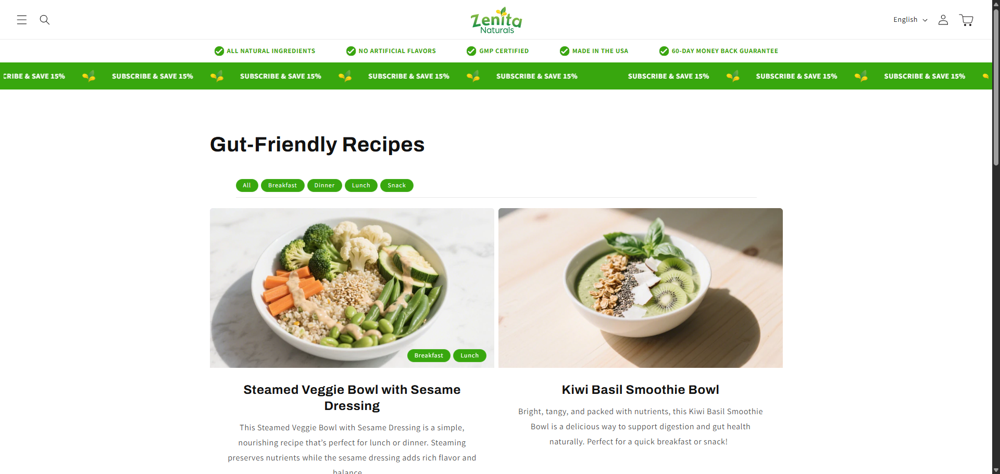
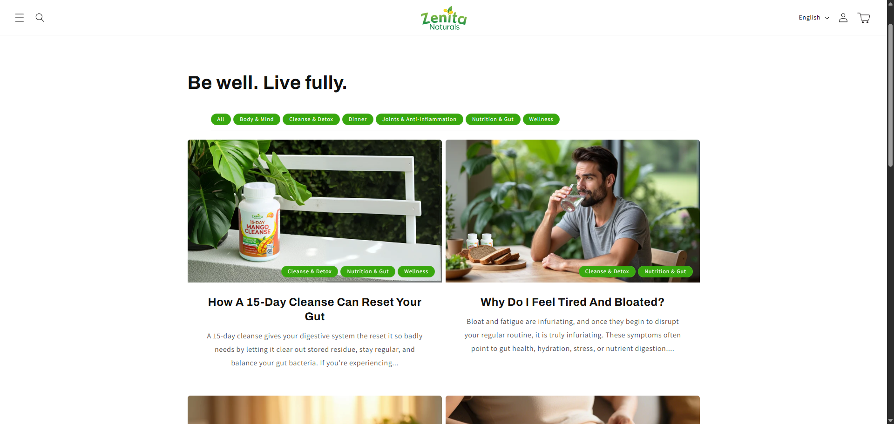

Zenita Naturals Landing Page

This project involved creating a high-converting, SEO-optimized landing page for Zenita Naturals. The primary goal was to capture email signups for a free gut health guide, which in turn would nurture leads and drive sales for their natural supplements.
Project Goals
- Increase organic search traffic for keywords related to gut health and natural remedies.
- Achieve a high conversion rate for email signups.
- Establish Zenita Naturals as an authority in the gut health space through valuable content.
My Role & Process
As the lead SEO and Copywriter, I was responsible for the entire content strategy and on-page optimization. My process included:
- Keyword Research: Identified high-intent, low-competition keywords to target.
- Copywriting: Wrote compelling, benefit-driven copy that resonated with the target audience and addressed their pain points.
- On-Page SEO: Implemented best practices for title tags, meta descriptions, headers, and image alt text to maximize search visibility.
- Conversion Rate Optimization (CRO): Designed a clean, user-friendly layout with a clear call-to-action to encourage signups.
Visuals & Content Strategy
A key part of the strategy was creating visually appealing and informative content. This included the main landing page for the guide and a series of blog posts to drive additional organic traffic. The collage below showcases mockups of the landing page and the blog section, demonstrating the cohesive brand experience.

